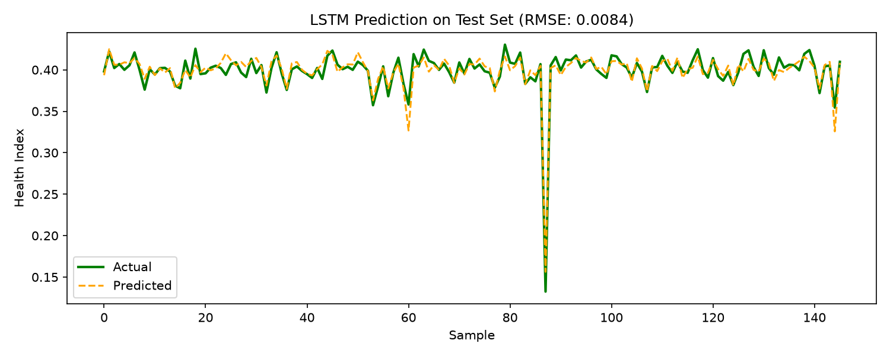

1 ผลของโมเดลนี้
🔁 LSTM Baseline RNN 🥈 อันดับ 2 จาก 4
0.0084
RMSE ↓
0.0063
MAE ↓
0.9471
Pearson r ↑
0.8968
R² ↑
147K
Parameters
33
Epochs ที่เทรนจริง
วัดบน test set 146 ตัวอย่างที่โมเดลไม่เคยเห็น · RMSE สูงกว่าอันดับ 1 (BiLSTM) อยู่ 6.4%
RMSE คิดเป็น 2.8% ของช่วง Health Index ทั้งหมด (0.298)
RMSE คิดเป็น 2.8% ของช่วง Health Index ทั้งหมด (0.298)
🧪 เทียบกับ baseline ที่ไม่ต้องเรียนรู้อะไรเลย
Health Index ใน test set กระจุกตัวสูงมาก — 84% ของตัวอย่างอยู่ในช่วง ±0.02 รอบค่ากลาง ดังนั้นแค่ ทายค่าเฉลี่ยเท่ากันทุกครั้ง ก็ได้ RMSE 0.0261 แล้ว
โมเดลนี้ทำได้ 0.0084 — ดีกว่า baseline อยู่ 68% (ตรงกับค่า R² = 0.8968)
ตัวเลข RMSE ที่ดูน้อยมากจึงต้องอ่านคู่กับบรรทัดนี้เสมอ ไม่ใช่อ่านลอย ๆ
Health Index ใน test set กระจุกตัวสูงมาก — 84% ของตัวอย่างอยู่ในช่วง ±0.02 รอบค่ากลาง ดังนั้นแค่ ทายค่าเฉลี่ยเท่ากันทุกครั้ง ก็ได้ RMSE 0.0261 แล้ว
โมเดลนี้ทำได้ 0.0084 — ดีกว่า baseline อยู่ 68% (ตรงกับค่า R² = 0.8968)
ตัวเลข RMSE ที่ดูน้อยมากจึงต้องอ่านคู่กับบรรทัดนี้เสมอ ไม่ใช่อ่านลอย ๆ
2 สถาปัตยกรรม
🧱 โครงสร้างทีละชั้น
Input(B, 20, 56)
20 timestep x 56 features
↓
LSTM(128)(B, 20, 128)
อ่านลำดับเวลาตรง ๆ
↓
LSTM(64)(B, 20, 64)
ชั้นที่สอง
↓
Last timestep(B, 64)
ใช้ hidden state ตัวสุดท้าย
↓
FC(32) → ReLU → FC(1) → Sigmoid(B,)
Health Index ∈ (0, 1)
💡 แนวคิดเบื้องหลัง
ป้อน 56 features ทั้ง 20 timestep เข้า LSTM ตรง ๆ โดยไม่มีการสกัด feature ก่อน ใช้เป็น baseline เพื่อดูว่าการเพิ่ม CNN หรือ attention เข้ามาคุ้มค่าจริงหรือไม่
✅ ข้อดี
- เรียบง่ายที่สุด ตีความง่าย เหมาะเป็นจุดอ้างอิง
- เทรนเร็วที่สุดในการทดลองนี้
- รักษา temporal resolution ครบทั้ง 20 timestep ไม่มี pooling
⚠️ ข้อจำกัด
- ไม่มี local feature extraction — ต้องเรียนรู้ทุกอย่างเอง
- เห็นเฉพาะ context ย้อนหลัง ไม่เห็นข้างหน้า
3 การเทรน
📉 Loss ต่อ epoch
แกน Y เป็น log scale — ถ้าเส้น train ลงเรื่อย ๆ แต่ val เริ่มเชิดขึ้น แปลว่าเริ่ม overfit
⚙️ รายละเอียดการเทรน
| รายการ | ค่า |
|---|---|
| Epochs ที่เทรนจริง | 33 (สูงสุด 100) |
| หยุดด้วย Early stopping | ใช่ (val loss ไม่ดีขึ้นติดกัน 15 epoch) |
| Val loss ต่ำสุด | 0.000076 |
| เวลาเทรนรวม | 6.2 วินาที |
| เวลาต่อ epoch | 0.19 วินาที |
| จำนวนพารามิเตอร์ | 147,009 |
| Loss function | MSE |
| Optimizer | AdamW (lr 5e-4, wd 1e-4) |
| LR schedule | CosineAnnealing → 1e-5 |
| Gradient clipping | max_norm = 1.0 |
เก็บ checkpoint ที่ val loss ต่ำสุด แล้วโหลดกลับมาวัดผลบน test set
→ ตัวเลข test ไม่เคยถูกใช้เลือกโมเดล
4 ผลการทำนายบน Test Set
📈 ค่าจริง vs ค่าที่ทำนาย
เรียงตัวอย่างตามค่า Health Index จริงจากมากไปน้อย (เพราะ test set ถูกสุ่มลำดับ)
เส้นทำนายยิ่งทาบเส้นจริงยิ่งดี
🎯 Scatter: จริง vs ทำนาย
📊 การกระจายของ Error
🔎 ดู error ละเอียด
| สถิติของ |error| | ค่า | ความหมาย |
|---|---|---|
| Median (P50) | 0.0054 | ครึ่งหนึ่งของตัวอย่างพลาดน้อยกว่านี้ |
| P90 | 0.0129 | 90% พลาดน้อยกว่านี้ |
| P95 | 0.0175 | 95% พลาดน้อยกว่านี้ |
| Max | 0.0314 | ตัวอย่างที่พลาดหนักที่สุด |
| Bias เฉลี่ย | +0.00018 | ทำนายสูงกว่าค่าจริงโดยเฉลี่ย |
อ่านยังไง
ถ้า RMSE (0.0084) สูงกว่า MAE (0.0063) มาก แปลว่ามีตัวอย่างส่วนน้อยที่พลาดหนักและดึงค่าเฉลี่ยขึ้น — ดูได้จากหางขวาของกราฟการกระจาย error
ถ้า RMSE (0.0084) สูงกว่า MAE (0.0063) มาก แปลว่ามีตัวอย่างส่วนน้อยที่พลาดหนักและดึงค่าเฉลี่ยขึ้น — ดูได้จากหางขวาของกราฟการกระจาย error
Bias บอกอะไร
ค่าบวก = โมเดลมองโลกในแง่ดีเกินจริง (ทำนายว่าสุขภาพดีกว่าความเป็นจริง) ซึ่งอันตรายกว่าในงานบำรุงรักษา เพราะอาจพลาดสัญญาณเตือน
ค่าบวก = โมเดลมองโลกในแง่ดีเกินจริง (ทำนายว่าสุขภาพดีกว่าความเป็นจริง) ซึ่งอันตรายกว่าในงานบำรุงรักษา เพราะอาจพลาดสัญญาณเตือน
🖼️ กราฟจากสคริปต์เทรน (matplotlib)

5 ยืนอยู่ตรงไหนเทียบกับโมเดลอื่น
🏁 อันดับทั้งหมด
| อันดับ | Model | RMSE ↓ | MAE ↓ | Pearson r ↑ |
|---|---|---|---|---|
| 🥇 | BiLSTM | 0.0079 | 0.0058 | 0.9536 |
| 🥈 | LSTM ← หน้านี้ | 0.0084 | 0.0063 | 0.9471 |
| 🥉 | Transformer | 0.0117 | 0.0070 | 0.8993 |
| #4 | CNN-LSTM | 0.0121 | 0.0064 | 0.8977 |
RMSE สูงกว่าอันดับ 1 (BiLSTM) อยู่ 6.4% ·
ดูหน้าเปรียบเทียบเต็ม →